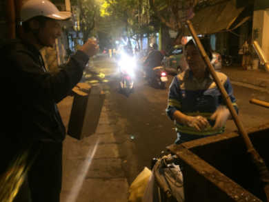
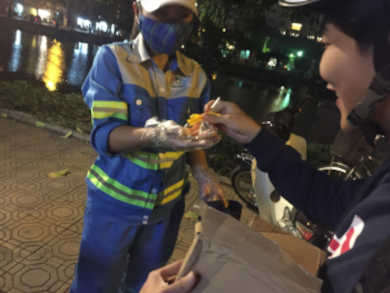
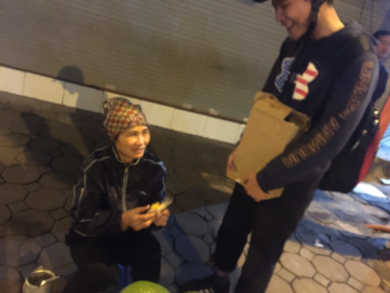
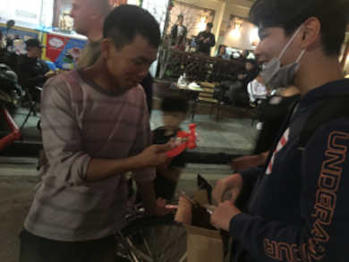
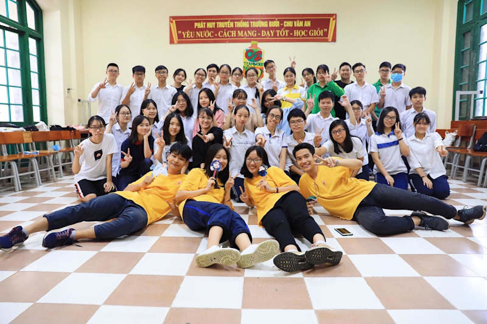

Volunteer
In addition to my academic pursuits, I strongly believe in giving back to my community. Over the years, I have actively participated in numerous volunteering activities in my country. Some of the notable volunteer experiences include organizing fundraisers for local charities, tutoring underprivileged students, and participating in environmental conservation initiatives. These experiences have not only allowed me to contribute positively \ to society but have also nurtured my sense of empathy and social responsibility.
|  |  |
|  |  |
During my tenure as the Deputy Head of the Logistics Committee at the Happy Pills Project in Hanoi, Vietnam from September 2019 to May 2020, I played a crucial role in ensuring the seamless execution of charity events. I took charge of organizing the facilities and content of these events, resulting in their smooth operation. As part of my responsibilities, I managed and allocated a team of over 30 staff members, assigning tasks and providing necessary support to ensure their preparedness for the events. Additionally, I actively engaged in problem-solving discussions, utilizing my research skills to identify effective solutions pertaining to human resources, finances, and overall efficiency. One of my notable achievements was successfully organizing large-scale events with over 100 participants, gaining significant support from the community.
As an instructor for the Teamwork Course at Chu Van An High School in Hanoi, Vietnam, from July 2019 to October 2019, I had the opportunity to plan and design lectures focused on collaboration skills for a group of over 30 students. I aimed to create an engaging and interactive learning environment where students could develop their teamwork abilities. Throughout the course, I provided valuable feedback on various activities and challenges, guiding students towards improvement and growth. Through my efforts, I am proud to say that 90% of the students successfully passed the course, demonstrating their enhanced collaboration skills and ability to work effectively in a team setting.